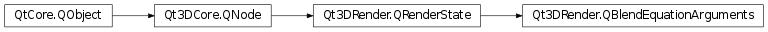

Qt3DRender.QBlendEquationArguments¶
Synopsis¶
Functions¶
- def
bufferIndex() - def
destinationAlpha() - def
destinationRgb() - def
sourceAlpha() - def
sourceRgb()
Slots¶
- def
setBufferIndex(index) - def
setDestinationAlpha(destinationAlpha) - def
setDestinationRgb(destinationRgb) - def
setDestinationRgba(destinationRgba) - def
setSourceAlpha(sourceAlpha) - def
setSourceRgb(sourceRgb) - def
setSourceRgba(sourceRgba)
Signals¶
- def
bufferIndexChanged(index) - def
destinationAlphaChanged(destinationAlpha) - def
destinationRgbChanged(destinationRgb) - def
destinationRgbaChanged(destinationRgba) - def
sourceAlphaChanged(sourceAlpha) - def
sourceRgbChanged(sourceRgb) - def
sourceRgbaChanged(sourceRgba)
Detailed Description¶
Encapsulates blending information: specifies how the incoming values (what’s going to be drawn) are going to affect the existing values (what is already drawn).
OpenGL pre-3.0: Set the same blend state for all draw buffers (one
QBlendEquationArguments) OpenGL 3.0-pre4.0: Set the same blend state for all draw buffers, but can disable blending for particular buffers (oneQBlendEquationArgumentsfor setting glBlendFunc, n QBlendEquationArgumentss for enabling/disabling Draw Buffers) OpenGL 4.0+: Can set blend state individually for each draw buffer.
-
class
PySide2.Qt3DRender.Qt3DRender.QBlendEquationArguments([parent=nullptr])¶ Parameters: parent – PySide2.Qt3DCore.Qt3DCore::QNodeThe constructor creates a new blend state object with the specified
parent.
-
PySide2.Qt3DRender.Qt3DRender.QBlendEquationArguments.Blending¶ Constant Description Qt3DRender.QBlendEquationArguments.Zero GL_ZERO Qt3DRender.QBlendEquationArguments.One GL_ONE Qt3DRender.QBlendEquationArguments.SourceColor GL_SRC_COLOR Qt3DRender.QBlendEquationArguments.SourceAlpha GL_SRC_ALPHA Qt3DRender.QBlendEquationArguments.Source1Alpha GL_SRC1_ALPHA Qt3DRender.QBlendEquationArguments.Source1Color GL_SRC1_COLOR Qt3DRender.QBlendEquationArguments.DestinationColor GL_DST_COLOR Qt3DRender.QBlendEquationArguments.DestinationAlpha GL_DST_ALPHA Qt3DRender.QBlendEquationArguments.SourceAlphaSaturate GL_SRC_ALPHA_SATURATE Qt3DRender.QBlendEquationArguments.ConstantColor 0GL_CONSTANT_COLOR Qt3DRender.QBlendEquationArguments.ConstantAlpha GL_CONSTANT_ALPHA Qt3DRender.QBlendEquationArguments.OneMinusSourceColor GL_ONE_MINUS_SRC_COLOR Qt3DRender.QBlendEquationArguments.OneMinusSourceAlpha GL_ONE_MINUS_SRC_ALPHA Qt3DRender.QBlendEquationArguments.OneMinusDestinationAlpha GL_ONE_MINUS_DST_ALPHA Qt3DRender.QBlendEquationArguments.OneMinusDestinationColor GL_ONE_MINUS_DST_COLOR Qt3DRender.QBlendEquationArguments.OneMinusConstantColor GL_ONE_MINUS_CONSTANT_COLOR Qt3DRender.QBlendEquationArguments.OneMinusConstantAlpha GL_ONE_MINUS_CONSTANT_ALPHA Qt3DRender.QBlendEquationArguments.OneMinusSource1Alpha GL_ONE_MINUS_SRC1_ALPHA Qt3DRender.QBlendEquationArguments.OneMinusSource1Color GL_ONE_MINUS_SRC1_COLOR Qt3DRender.QBlendEquationArguments.OneMinusSource1Color0 GL_ONE_MINUS_SRC1_COLOR (deprecated)
-
PySide2.Qt3DRender.Qt3DRender.QBlendEquationArguments.bufferIndex()¶ Return type: PySide2.QtCore.intSee also
PySide2.Qt3DRender.Qt3DRender::QBlendEquationArguments.setBufferIndex()
-
PySide2.Qt3DRender.Qt3DRender.QBlendEquationArguments.bufferIndexChanged(index)¶ Parameters: index – PySide2.QtCore.int
-
PySide2.Qt3DRender.Qt3DRender.QBlendEquationArguments.destinationAlpha()¶ Return type: PySide2.Qt3DRender.Qt3DRender::QBlendEquationArguments.BlendingSee also
PySide2.Qt3DRender.Qt3DRender::QBlendEquationArguments.setDestinationAlpha()
-
PySide2.Qt3DRender.Qt3DRender.QBlendEquationArguments.destinationAlphaChanged(destinationAlpha)¶ Parameters: destinationAlpha – PySide2.Qt3DRender.Qt3DRender::QBlendEquationArguments.Blending
-
PySide2.Qt3DRender.Qt3DRender.QBlendEquationArguments.destinationRgb()¶ Return type: PySide2.Qt3DRender.Qt3DRender::QBlendEquationArguments.BlendingSee also
PySide2.Qt3DRender.Qt3DRender::QBlendEquationArguments.setDestinationRgb()
-
PySide2.Qt3DRender.Qt3DRender.QBlendEquationArguments.destinationRgbChanged(destinationRgb)¶ Parameters: destinationRgb – PySide2.Qt3DRender.Qt3DRender::QBlendEquationArguments.Blending
-
PySide2.Qt3DRender.Qt3DRender.QBlendEquationArguments.destinationRgbaChanged(destinationRgba)¶ Parameters: destinationRgba – PySide2.Qt3DRender.Qt3DRender::QBlendEquationArguments.Blending
-
PySide2.Qt3DRender.Qt3DRender.QBlendEquationArguments.setBufferIndex(index)¶ Parameters: index – PySide2.QtCore.intSee also
PySide2.Qt3DRender.Qt3DRender::QBlendEquationArguments.bufferIndex()
-
PySide2.Qt3DRender.Qt3DRender.QBlendEquationArguments.setDestinationAlpha(destinationAlpha)¶ Parameters: destinationAlpha – PySide2.Qt3DRender.Qt3DRender::QBlendEquationArguments.BlendingSee also
PySide2.Qt3DRender.Qt3DRender::QBlendEquationArguments.destinationAlpha()
-
PySide2.Qt3DRender.Qt3DRender.QBlendEquationArguments.setDestinationRgb(destinationRgb)¶ Parameters: destinationRgb – PySide2.Qt3DRender.Qt3DRender::QBlendEquationArguments.BlendingSee also
PySide2.Qt3DRender.Qt3DRender::QBlendEquationArguments.destinationRgb()
-
PySide2.Qt3DRender.Qt3DRender.QBlendEquationArguments.setDestinationRgba(destinationRgba)¶ Parameters: destinationRgba – PySide2.Qt3DRender.Qt3DRender::QBlendEquationArguments.BlendingChange both
PySide2.Qt3DRender.Qt3DRender::QBlendEquationArguments.destinationRgb()andPySide2.Qt3DRender.Qt3DRender::QBlendEquationArguments.destinationAlpha()properties todestinationRgba.
-
PySide2.Qt3DRender.Qt3DRender.QBlendEquationArguments.setSourceAlpha(sourceAlpha)¶ Parameters: sourceAlpha – PySide2.Qt3DRender.Qt3DRender::QBlendEquationArguments.BlendingSee also
PySide2.Qt3DRender.Qt3DRender::QBlendEquationArguments.sourceAlpha()
-
PySide2.Qt3DRender.Qt3DRender.QBlendEquationArguments.setSourceRgb(sourceRgb)¶ Parameters: sourceRgb – PySide2.Qt3DRender.Qt3DRender::QBlendEquationArguments.BlendingSee also
PySide2.Qt3DRender.Qt3DRender::QBlendEquationArguments.sourceRgb()
-
PySide2.Qt3DRender.Qt3DRender.QBlendEquationArguments.setSourceRgba(sourceRgba)¶ Parameters: sourceRgba – PySide2.Qt3DRender.Qt3DRender::QBlendEquationArguments.BlendingChange both
PySide2.Qt3DRender.Qt3DRender::QBlendEquationArguments.sourceRgb()andPySide2.Qt3DRender.Qt3DRender::QBlendEquationArguments.sourceAlpha()properties tosourceRgba.
-
PySide2.Qt3DRender.Qt3DRender.QBlendEquationArguments.sourceAlpha()¶ Return type: PySide2.Qt3DRender.Qt3DRender::QBlendEquationArguments.BlendingSee also
PySide2.Qt3DRender.Qt3DRender::QBlendEquationArguments.setSourceAlpha()
-
PySide2.Qt3DRender.Qt3DRender.QBlendEquationArguments.sourceAlphaChanged(sourceAlpha)¶ Parameters: sourceAlpha – PySide2.Qt3DRender.Qt3DRender::QBlendEquationArguments.Blending
-
PySide2.Qt3DRender.Qt3DRender.QBlendEquationArguments.sourceRgb()¶ Return type: PySide2.Qt3DRender.Qt3DRender::QBlendEquationArguments.BlendingSee also
PySide2.Qt3DRender.Qt3DRender::QBlendEquationArguments.setSourceRgb()
-
PySide2.Qt3DRender.Qt3DRender.QBlendEquationArguments.sourceRgbChanged(sourceRgb)¶ Parameters: sourceRgb – PySide2.Qt3DRender.Qt3DRender::QBlendEquationArguments.Blending
-
PySide2.Qt3DRender.Qt3DRender.QBlendEquationArguments.sourceRgbaChanged(sourceRgba)¶ Parameters: sourceRgba – PySide2.Qt3DRender.Qt3DRender::QBlendEquationArguments.Blending
© 2018 The Qt Company Ltd. Documentation contributions included herein are the copyrights of their respective owners. The documentation provided herein is licensed under the terms of the GNU Free Documentation License version 1.3 as published by the Free Software Foundation. Qt and respective logos are trademarks of The Qt Company Ltd. in Finland and/or other countries worldwide. All other trademarks are property of their respective owners.